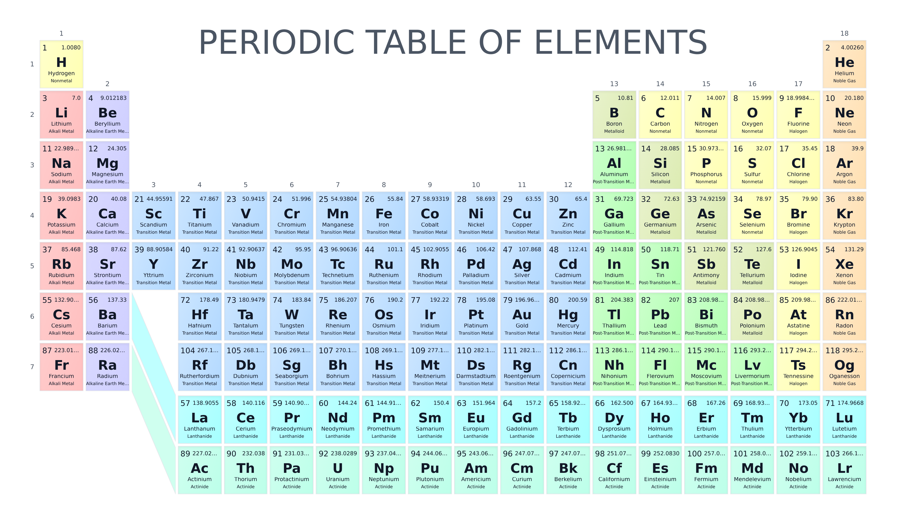

Week 5: Consolidation
Chemistry Challenge
This week, we’ll bring together the skills you’ve developed over the past four weeks to tackle a practical challenge. Specifically, for the Chemistry challenge in this notebook, you will use data from the periodic table to determine various properties of isotopes. This task is designed to give you practice working with strings, conditional logic, and dictionaries in a familiar Chemistry setting.
Please Note: This week’s challenges are designed to difficult! Do not worry if you are unable to complete a challenge in the time given. The important thing is that you are building resilience and practicing problem-solving skills - everything else is secondary!
Table of Contents
Background
The Periodic Table
In your previous studies, you have likely encountered the periodic table of elements. In this challenge, you will use the periodic table to explore and derive various properties of isotopes.

The periodic table organizes chemical elements (substances whose atoms contain a fixed number of protons) into rows (periods) and columns (groups). In addition to ordering the elements, the periodic table is also a powerful tool for categorization. It groups together elements that share similar properties.
For instance, in the image above, the colors highlight the following categories of elements:
- Alkali metals: very reactive metals that readily form compounds with nonmetals.
- Alkaline earth metals: reactive metals that form basic solutions when they react with water.
- Lanthanides: rare earth elements often used in magnets and electronics.
- Actinides: heavy elements, many of which are radioactive.
- Transition metals: versatile metals widely used in alloys and catalysts.
- Post-transition metals: softer metals with lower melting points than transition metals.
- Metalloids: elements with properties of both metals and nonmetals.
- Halogens and other nonmetals: generally poor conductors; many are gases or brittle solids, and halogens in particular are very reactive.
- Noble gases: very stable gases that rarely react with other elements.
By convention, we assume that all lathanides have period 6 and group 3, and all actinides have period 7 and group 3 (see periodic table above).
In each box of the periodic table, you can see the name, chemical symbol, and category of the element. The atomic number is shown in the top left. This tells you how many protons are in the nucleus of the atom, and it also determines the element’s position in the table. An atom has the same number of protons and electrons, so the atomic number also represents the number of electrons in the atom. The relative atomic mass is shown in the top right. This value represents the average mass of all the naturally occurring isotopes of that element, taking into account how common each isotope is.
For example, the box for carbon (C) shows the atomic number 6 in the top left, which means every carbon atom has 6 protons. In the top right, the relative atomic mass is shown as about 12.01, reflecting the natural mixture of mostly carbon-12 and a small amount of carbon-13.
Isotopes
As noted above, not all of the atoms of the same element have the same mass. This is because, although atoms of the same element must have, by definition, the same number of protons, they can have different numbers of neutrons. An atom with a fixed number of neutrons is known as an isotope and we usually denote isotopes by the element name followed by the mass number: that is, the total number of protons and neutrons in the atom. For instance, carbon-12 is an isotope of carbon with a mass number of 12. You might also see this written as \(^{12}C\) or \(^{12}_6C\), if we want to highlight that the atom possesses \(6\) protons.
The Challenge
You are given a string of one of the following forms: N_P_E or N_E, where: - \(N\) is an integer representing the number of mass number of the isotope, - \(P\) is an integer representing the number of protons in an isotope, - \(E\) is the chemical symbol of the element.
For instance, 12_6_C represents \(^{12}_6C\) and 12_C represents \(^{12}C\).
You are also given the variable named periodic_table, loaded in by the below code. This includes some of the data displayed in the periodic table, saved as a dictionary of dictionaries.
Note: Don’t worry if you are unsure what the
importandfromkeywords are doing in the above code. For now, you can think of these as a way of loading in pre-written functions such as theget_periodic_tablefunction. You’ll have plenty of opportunities to practice and understand these features of Python as the course goes on.
Try running the following commands to see if you can understand how to use this variable:
Note: Before proceeding, if you are unsure about dictionaries please see the week 1 intermediate notebook for further detail.
For an arbitrary isotope represented as described above, the challenge is to solve the following tasks.
Note: If you are not sure how to get started, have a look at the guidance section on this week’s home page.
Important: For this task, you may only use material covered in the previous 4 week’s classes. To solve the challenge problems, you may use any content from the
beginner,intermediate, oradvanced notebooks. However, every challenge can be completed using only the material in thebeginnernotebooks, so don’t worry if you haven’t looked at the others. The tasks are designed to be accessible to everyone!
Task 1: Verifying Elements
Write a function that takes two inputs; a string representing an isotope and the periodic_table dictionary. The function should verify whether the chemical symbol in the isotope string corresponds to a valid element in the periodic table and print a message indicating the result.
Hint: You can convert the keys in dictionary to a list using list(dict_name.keys()).
Task 2: Verifying the Atomic Number
Write a function that takes two inputs; a string representing an isotope and the periodic_table dictionary. The function must check whether the number of protons, if provided, matches that in the periodic table.
Task 3: Counting Electrons, Protons and Neutrons
Update your code from Task 2 so that, unless an incorrect number of protons is provided, it prints the number of protons, neutrons, and electrons in the isotope. Make sure your code outputs these values even if the number of protons is not explicitly included in the isotope string.
Task 4: Group and Period
Write a function that takes two inputs; a string representing an isotope and the periodic_table dictionary. The function must print the group and period of the element in the periodic table.
Task 5: Isotope Names
Write a function which return a string representing the name of the isotope. For instance, 12_C should return "Carbon-12". Note that \(^1H\),\(^2H\) and \(^3H\) do not follow the standard convention and are usually referred to as "Hydrogen", "Deuterium" and "Tritium" rather than "Hydrogen-1", "Hydrogen-2" and "Hydrogen-3", respectively.
Task 6: Categorizing Isotopes
Write a function which returns a string representing the category the isotope belongs to (e.g. "Alkali Metals", "Actinides",…, etc).